About the swissEO Browser
The swissEO Browser is a web viewer for the swissEO satellite products of swisstopo: the Sentinel-2 surface reflectance mosaics (swissEO S2-SR) and the products derived from them, such as the Vegetation Health Index (VHI) and the NDVI change maps. You can look at the images, compare dates, compute vegetation and water indices, restrict them to forest or farmland, get statistics and time series for your own areas, look at them on the terrain in 3D, and download images and data.
Its user interface copies the Copernicus Browser of the European Copernicus Data Space Ecosystem, so if you know that one, you will feel at home. The difference is under the hood: the swissEO Browser is a single web page without a server of its own and without a login. Everything is calculated on the fly in your web browser, directly from the swissEO Cloud Optimized GeoTIFFs (COGs) on data.geo.admin.ch. Nothing is precomputed: when you change a layer, a date or a setting, your browser reads the needed pixels and computes the result.
Please note that AI (Claude Code with the Opus 5.5 model, medium effort) was used extensively to prepare this website, adapting it from the Copernicus Browser. The indices were edited and tested manually in QGIS or with rasterio and GDAL.
This help has two parts. Part A is a short tutorial for your first visit: it takes about fifteen minutes. Part B describes every function in the order of the Copernicus Browser documentation. You can open this page at any time with the i button at the top right of the map. The data and their sources are listed in section 4.
Part A: Tutorial for your first visit
No prior knowledge needed. Open the swissEO Browser in a second window and follow along.
1What you see
The window has two parts: the menu on the left and the map on the right. The menu has two tabs, Visualise (choose date and layer) and Info (about the data, feedback). The map shows the selected layer over a background map; the buttons on the map are the tools.
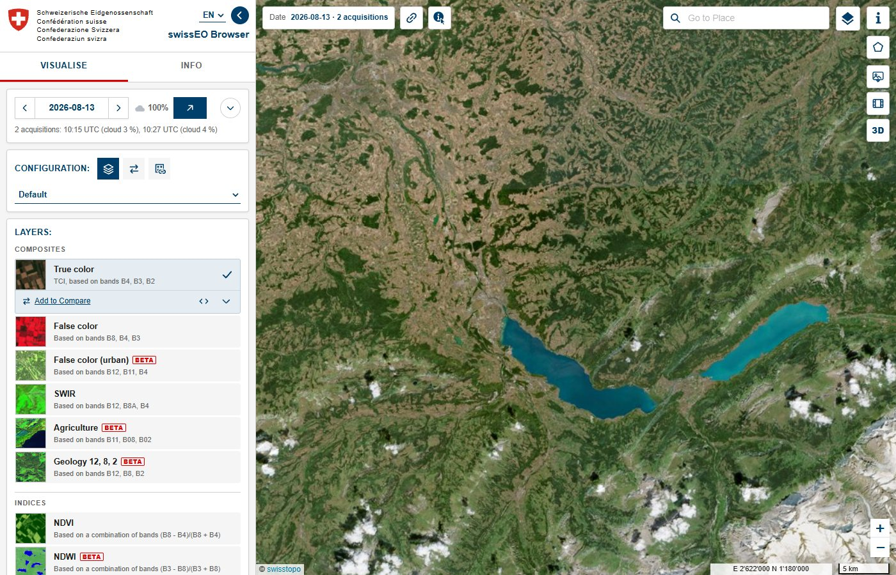
- 1Date: the selected day, the arrows for the previous / next day with data, and the calendar
- 2Configuration: groups of layers for a topic, and the Compare and WMS / WMTS views
- 3Layers: click one to show it on the map
- 4Date on the map, Copy link (chain icon) and the Pixel inspector ((i) with a pointer)
- 5Go to Place: search a town, address or mountain
- 6The basemap button (layers icon) and Help (the i, this page)
- 7Tools: area of interest, image download, timelapse and 3D
- 8Zoom, mouse position in Swiss coordinates (LV95) and scale bar
2Go to a place
Click into Go to Place at the top right of the map and type at least two letters of a place name, an address, a municipality, a canton or a mountain. Results appear as you type; click one (or use the arrow keys and Enter) and the map zooms there and drops a pin. The × clears the search.
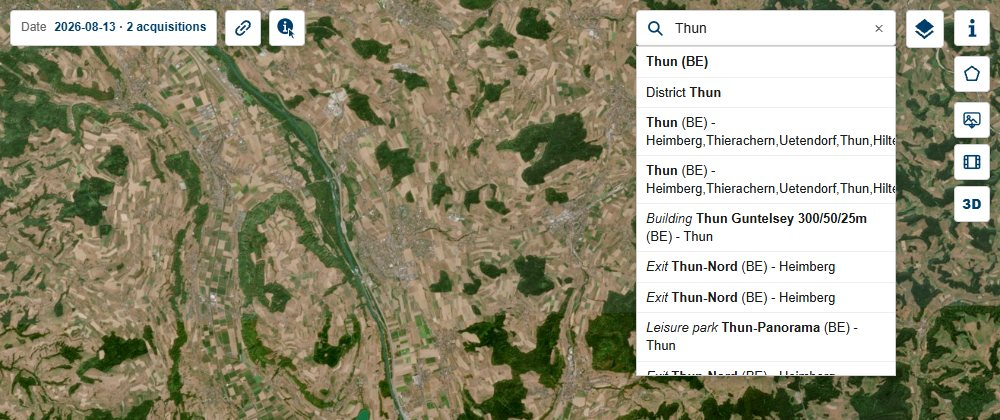
3Choose a date
Sentinel-2 passes over Switzerland every few days, so there are images for many, but not all days. At the top of the menu:
- ‹ and › jump to the previous or next day with data for the area you see;
- the arrow button ↗ jumps to the latest image;
- the round button opens the calendar: days with data are marked; the slider sets the maximum cloud cover.
Below the date you see how many acquisitions (satellite passes) there are on that day and how cloudy they were.
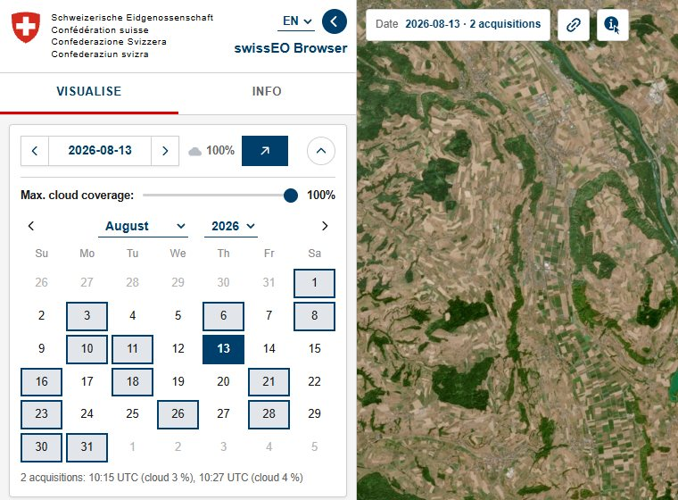
4Choose a layer
A layer is one way of looking at the data. True color shows the landscape as your eyes would see it. Other layers make things visible that the eye does not see: False color shows healthy vegetation in bright red, the NDVI shows how green and vital plants are, the Moisture index shows water stress.
- Pick a Configuration in the pull-down: Default (all general layers), Agriculture, Drought, Drought 2026 (with stories) or Forest.
- Click a layer in the list. It appears on the map and gets a check mark. Clicking it again hides it.
- Open the layer menu with the chevron ⌄ on the active layer: you get a description, the legend and the settings.
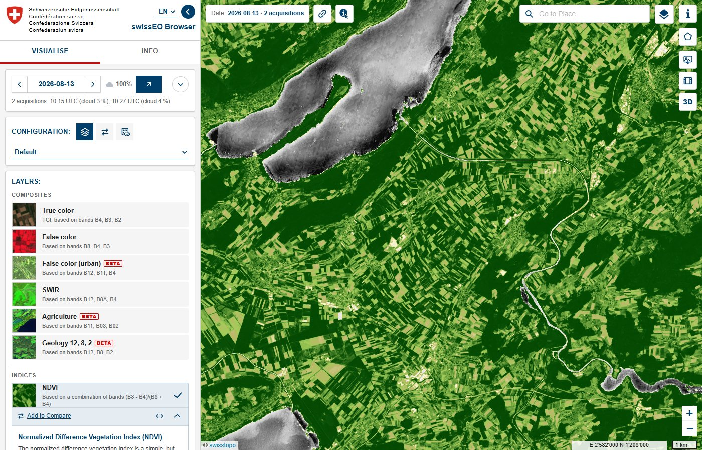
5Keep only forest or farmland
Often only part of the landscape matters: the forest for a drought assessment, the fields for a harvest. The vegetation mask hides everything else.
- In the layer menu, scroll down to Masks. The pull-down Vegetation mask says Off.
- Choose a mask, for example Land use (categories below) under Nutzungsflächen: the agricultural land use of the cantons.
- Tick the categories you want to keep, for example arable land, permanent meadows and permanent pastures. The map now shows the layer only there.
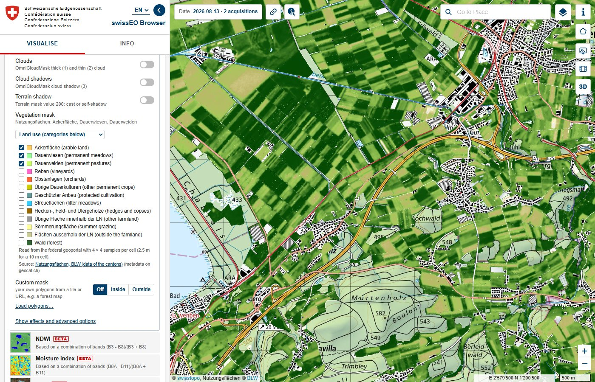
The other masks keep forest (the habitat map of swissEO VHI or the swissTLM3D forest), conifer, mixed or broadleaf forest (Forest Type NFI 2023, ETH tree species), single tree species (ETH) or all vegetation. They are described, with their sources, in Vegetation masks. Masks also apply to statistics, downloads and the timelapse.
6Read the value of a pixel
Click the Pixel inspector button (the (i) with a mouse pointer, at the top of the map) to switch it on: it turns blue. Then click on the map. A box shows the values at that spot: the position, the reflectance of every band, the index value of the layer, the cloud and terrain information, the forest / vegetation mask, the swissTLM3D forest class, the broadleaf probability of Forest Type NFI, the broadleaf share and dominant tree species of the ETH map and the Nutzungsflächen category. Click the button again to switch it off.
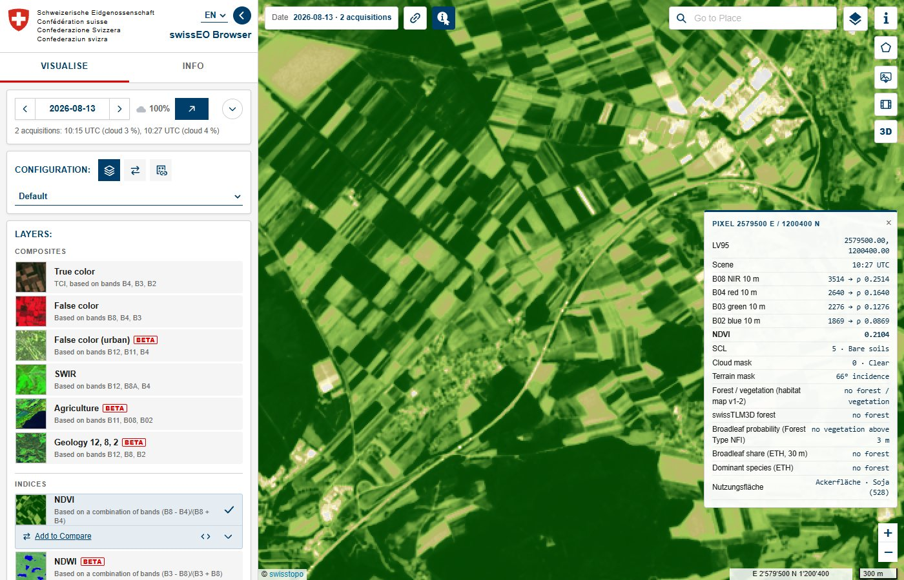
7Draw an area and get statistics
- Click the pentagon button (area of interest) at the top right of the map, below the i.
- Choose the rectangle or the polygon and draw on the map (a polygon ends with a double click or a click on its first point). You can also import a file, see Area of interest.
- A small toolbar appears next to the button. Click the chart icon for Statistical info.
You get the mean, median and other statistics with a histogram for the selected date, and a time series: the values of the area over a date range, which you can download as CSV.
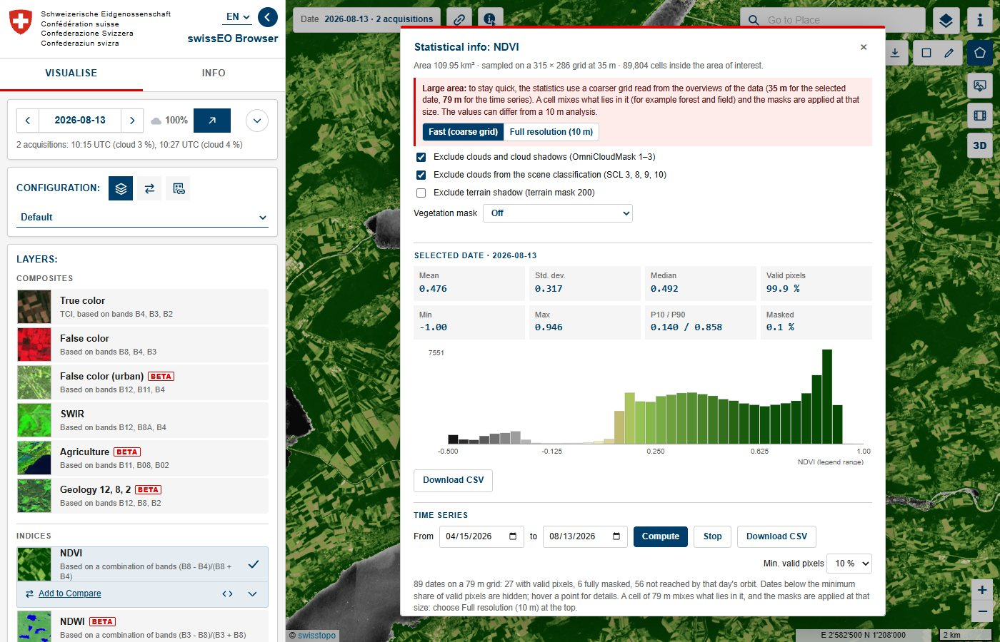
8Look at it in 3D
The 3D button, the last of the tools, lays the map and the satellite layer on the terrain.
- Click 3D: the map tilts and the place names (labels) appear. The button now says 2D, which brings back the flat map; the labels stay until you switch them off in the layers button.
- Drag with the right mouse button (or hold Ctrl and drag) to tilt and turn the view; on a touch screen use two fingers. Without a right mouse button, use the 3D navigation above the zoom buttons: the upper disc moves the map, the lower one turns and tilts it; its red tab points north.
- Three more buttons appear above the tools: the 3D settings (gear), the sun shading (light bulb) and the sun time (sun). The terrain is lit by the sun at the time of the satellite image; with the sun time you can light the mountains as in the morning or the evening.
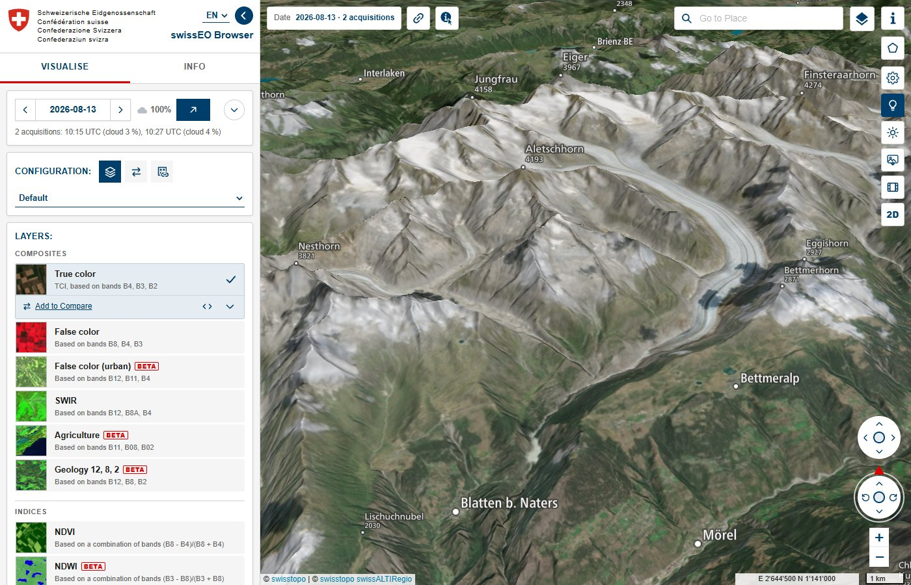
9Download an image
The picture button opens Image download. Basic saves what you see as PNG or JPG, with date, scale bar and legend if you like (also a 3D view). Analytical gives you GeoTIFF files with the actual values for GIS software such as QGIS. High-res print renders the view for printing.
10Share your view
The address in your browser always describes exactly what you see: place, date, layer, masks and settings, also the 3D view. Click the Copy link button (the chain icon at the top of the map) and paste the link into an e-mail or chat. Whoever opens it sees the same map.
Part B: All functions
The sections follow the Copernicus Browser documentation: visualization (including 3D), tools, sharing. Only the functions that the swissEO Browser has are described; see section 4 for what is not included.
1Visualization
Layers and configurations
A configuration (called theme in the Copernicus Browser) is a list of layers for a topic:
| Configuration | Layers |
|---|---|
| Default | composites (true color, false color, urban, SWIR, agriculture, geology), indices (NDVI, NDWI, moisture index, NDSI, NBR, AOT), swissEO VHI forest and vegetation, swissEO NDVIdiff, scene classification, cloud mask, terrain |
| Agriculture | true color, false color, NDVI, EVI, Barren Soil, Moisture Stress, moisture index, agriculture, SAVI |
| Drought | true color, NDVI, EVI, moisture index, swissEO VHI, swissEO NDVIdiff and NDVIz, NDDI and NDDI change, NDVI difference to a reference date |
| Drought 2026 | true color, moisture index, NDWI, Moisture Stress, NDVI, SWIR, urban, Highlight Optimized Natural Color, plus the highlights |
| Forest | true color, NDVI, EVI, swissEO VHI forest, VHI cumulative deficit, VHI days in extreme stress, swissEO NDVIdiff and NDVIz, NDVI difference to a reference date, NBR, moisture index, Forest Disturbance Classification |
The true color is the image delivered with each swissEO mosaic. All other layers are computed from the bands in your browser, or read from the swissEO products (VHI, NDVIdiff, NDVIz). When several satellite passes cover the same day, they are joined into one mosaic, the most recent on top.
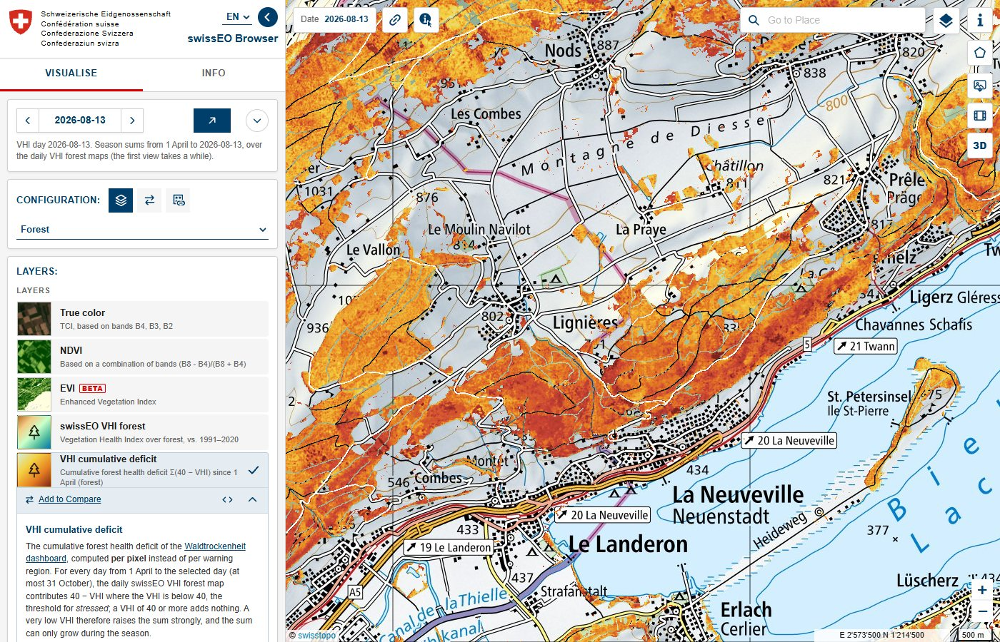
Date and cloud filter
A link without a date opens on the latest day with data. The arrows and the calendar only offer days whose images actually reach the map view, so they update when you move the map. The cloud slider in the calendar hides days whose mosaic is cloudier than the chosen percentage. For the swissEO products with only a few dates per year (NDVIdiff, NDVIz) the product nearest to the selected date is shown, and the text below the date says which one.
Modifying a visualization
The chevron on the active layer opens its menu:
- Description and a More info link; the </> button shows the formula and the scaling used.
- Legend with an adjustable colour scale (min / max) and Reset colour scale.
- Masks: see the next two sections.
- Show effects and advanced options: gain, gamma, the red / green / blue ranges and the opacity. For the band composites also Look (standard stretch or the True color optimized tone curve of the Copernicus Browser) and Adaptive gain, which avoids saturated snow and clouds. Reset effects undoes all changes.
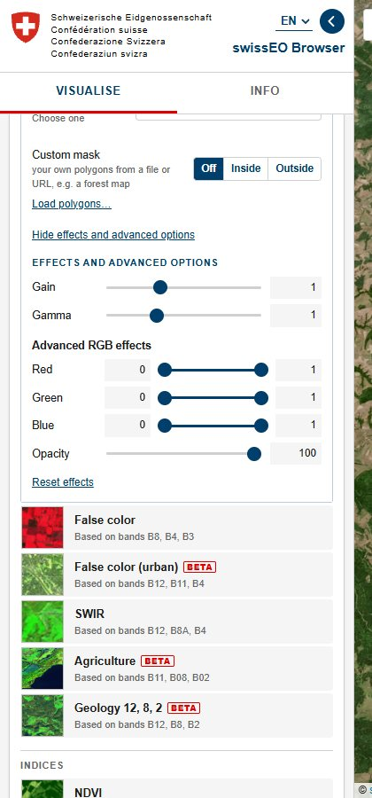
Masks
Every Sentinel-2 layer has these masks in its menu; they hide pixels on the map and leave them out of statistics, downloads and the timelapse:
- Clouds and Cloud shadows: the cloud mask delivered with each swissEO mosaic (thick and thin cloud, cloud shadow);
- Terrain shadow: the slopes in the shadow of the terrain at the time of the acquisition;
- Vegetation mask: keeps forest, all vegetation, conifer, mixed or broadleaf forest, chosen tree species, or chosen categories of the agricultural land use (next section);
- Custom mask: your own polygons (see Custom masks).
Vegetation masks
The pull-down Vegetation mask shows Off ("Choose one") by default. Its entries, in this order:
| Entry | What it keeps | Source |
|---|---|---|
| Habitat Map: Forest, All vegetation | Forest or all vegetation of the habitat map that swissEO VHI uses on the date of the data: v1-0 before 2024-07-12, v1-1 before 2025-12-11, v1-2 since. A time series takes the map of each date; the two-date layers take the map of the selected date on both dates, so a new map version never shows up as a change. The small text under the mask names the version in use. | swissEO habitat maps (based on CLC+), as used by the swissEO VHI processor |
| swissTLM3D: Forest | The forest of the swissTLM3D landscape model, with check boxes for Wald (forest), Wald offen (open forest) and Gebüschwald (scrub forest), in any combination | swissTLM3D,
swisstopo (map service layer ch.swisstopo.swisstlm3d-wald) |
| Forest Type NFI 2023: Conifer forest (Nadelwald, incl. larch), Mixed forest (Mischwald), Broadleaf forest (Laubwald) | Trees by their probability of being broadleaf. A slider with two handles sets the limits: conifer up to the first (30 % by default), mixed up to the second (85 %, the National Forest Inventory's pure broadleaf), broadleaf above it. Larch counts as conifer. Options: the mean of 3 × 3 pixels before the classes, which the LFI recommends in mixed stands; and Within, the forest mask the trees must lie in: the habitat map forest of the date (default), the swissTLM3D forest or none (all vegetation above 3 m). | Forest Type NFI, WSL (Waser et al. 2025, doi:10.16904/1000001.7), funded by the BAFU; 10 m, Sentinel-1 and -2 of 2021 to 2023, yearly updates planned from 2027 |
| ETH tree species (30 m): Conifer forest, Mixed forest, Broadleaf forest | The same three classes and slider (30 / 85 %) on the broadleaf share of the basal area: a share, not a probability as in Forest Type NFI, so the limits are not directly comparable. The 3 × 3 mean covers 3 × 3 pixels of 30 m (90 m). Only the forest pixels of the ETH map, without a further forest mask. | ETH tree species, Zhou et al. 2026 (ETH Zürich, preprint arXiv:2611.08095), 30 m, trained on National Forest Inventory plots; licence CC BY-NC 4.0 (non-commercial use only) |
| ETH tree species (30 m): Dominant tree species | Check boxes for the class with the largest basal-area share per 30 m pixel: Spruce (Fichte), Fir (Tanne), Pine (Föhre), Larch (Lärche), Arolla pine (Arve), Beech (Buche), Maple (Ahorn), Ash (Esche), Oak (Eiche), Chestnut (Kastanie), Other (Andere); All conifers, All broadleaves and All set them at once. | |
| Nutzungsflächen (BLW): Land use | The agricultural land use of the cantons, with check boxes for its 13 main categories: Ackerfläche (arable land), Dauerwiesen (permanent meadows), Dauerweiden (permanent pastures), Reben (vineyards), Obstanlagen (orchards), Übrige Dauerkulturen (other permanent crops), Geschützter Anbau (protected cultivation), Streueflächen (litter meadows), Hecken-, Feld- und Ufergehölze (hedges and copses), Übrige Fläche innerhalb der LN (other farmland), Sömmerungsfläche (summer grazing), Flächen ausserhalb der LN (outside the farmland), Wald (forest) | Nutzungsflächen of the Federal Office for Agriculture (BLW), from the data of the cantons, map service of the federal geoportal (metadata on geocat.ch) |
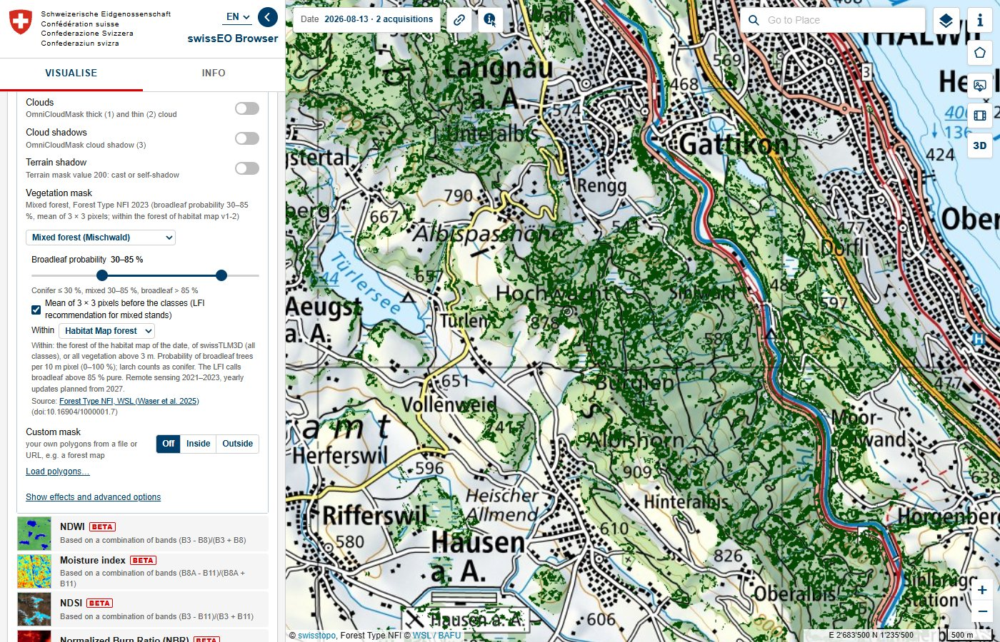
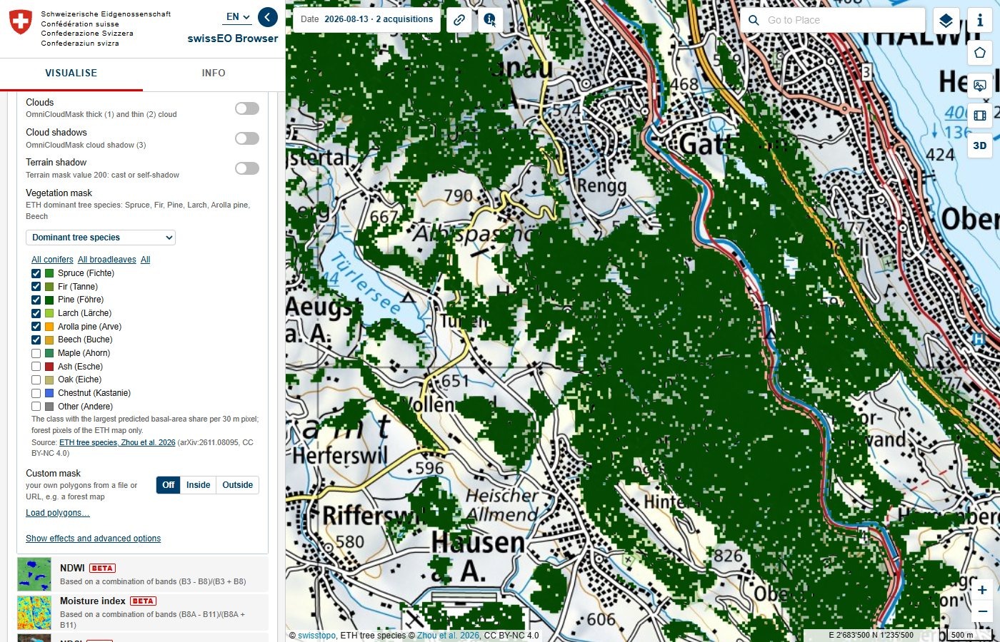
Good to know:
- Below the pull-down, the menu shows the mask in use and its options: the check boxes, the slider and a link to the metadata of the source.
- The Nutzungsflächen are read from the federal map service at 2.5 m (4 × 4 samples per 10 m cell). The service draws every parcel with a thin outline; outline pixels take the category of the parcel next to them. Areas agree with the parcels of the cantonal data to within about 1 to 3 %. The pixel inspector shows the main category, the use and its code.
- The two-date layers (NDDI change, NDVI difference to a reference date) use the mask of the selected date on both dates, so a new version of a habitat map never shows up as a change.
- The mask also applies to the statistics (where you can choose another one), the spectral explorer, the downloads and the timelapse; the change report gives the masked area in hectares.
- The pixel inspector shows at every spot the habitat map, the swissTLM3D forest class, the broadleaf probability (Forest Type NFI), the broadleaf share and dominant tree species (ETH) and the Nutzungsflächen category, whichever mask is chosen; with a leaf type mask also the class at the current limits.
Custom masks: your own geometries
You can restrict any layer to your own polygons, for example a forest map, the parcels of a farm or a nature reserve. In the layer menu, under Custom mask, load a file (GeoJSON, KML/KMZ, GPX, WKT or a zipped Shapefile) or a URL. Then choose Inside (show the data only inside the polygons) or Outside (only outside). The mask applies to the map, compare, statistics, exports and the timelapse, and can be combined with a vegetation mask. A mask loaded from a URL is part of copied links; a mask from a file stays on your computer.
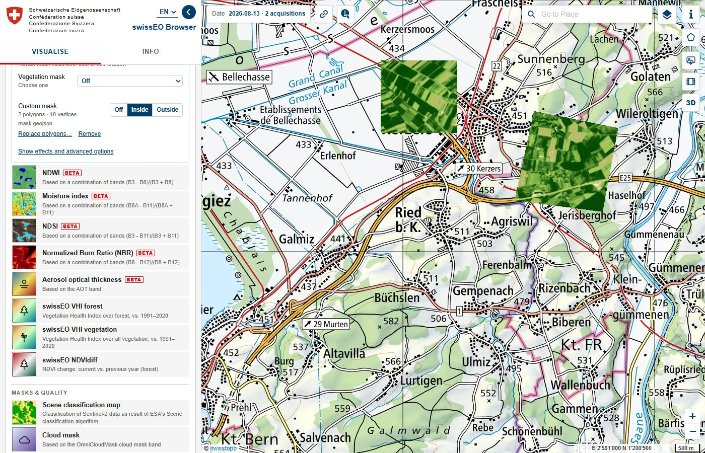
Comparing visualizations
Click Add to Compare under the active layer to put it, with its date and settings, into the compare list. Add another layer or the same layer on another date. Then open the Compare view (the ⇄ icon next to the configuration). Two effects are available: Split, with a handle on the map that you drag to swipe between the layers, and Opacity. Entries can be reordered, removed or zoomed to.
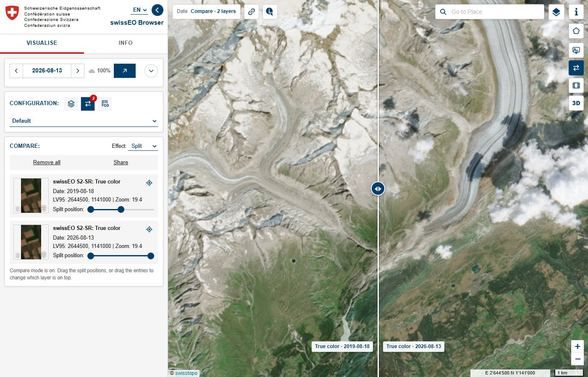
Highlights
The configuration Drought 2026 has highlights: short stories with a before and after comparison. Click a card to open the place with the two dates side by side; the chevron on the card shows the text and its source.
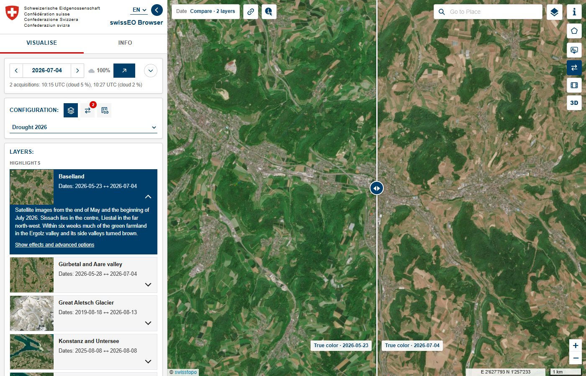
WMS / WMTS services
The third icon next to the configuration opens WMS / WMTS: layers of other map services on top of the basemap. The swisstopo WMS (all layers of map.geo.admin.ch) is preset; the pull-down lists the external providers of map.geo.admin.ch, and + adds any other WMS or WMTS address. Search the layers, click one to show it, and use Add to Compare to compare it with a satellite layer.
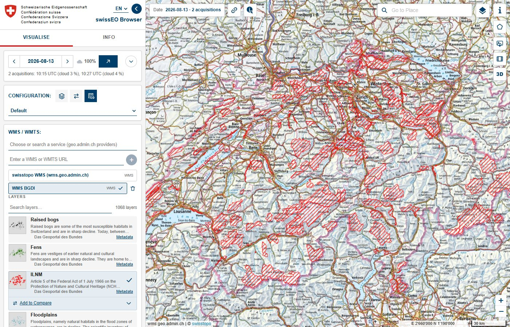
Basemaps and labels
Hover the layers button at the top right of the map (left of the i), as in the Copernicus Browser, to choose the basemap: Map (swisstopo national map), SWISSIMAGE (aerial photo), Map Grey or None. Under Map overlays, Labels writes the names of places, roads, peaks and lakes from swisstopo's base map above the satellite data, as sharp text at every scale (in 3D upright and facing you). The names stop at the border of Switzerland and Liechtenstein.
3D visualization
The 3D view lays the map, the satellite layer, the labels and the area of interest on the terrain, as the 3D view of the Copernicus Browser does.
Opening and navigating
- Select a layer, then click the 3D button below the tools. The map tilts and the labels are switched on; the button now says 2D and returns to the flat map (the labels stay on).
- Drag with the right mouse button, or hold Ctrl and drag, to tilt and turn the view; on a touch screen use two fingers. Move and zoom as usual. The 3D navigation above the zoom buttons does the same with the mouse alone: the upper disc moves the map, the lower one turns it (left, right) and tilts it (up, down). Click an arrow for one step or hold it down; drag the knob in the middle, the farther the faster. The red tab always points north: a click on it turns the map back to north, a double-click on the lower knob also makes it flat again (seen from straight above). The zoom buttons sit below the discs.
- A first 3D view takes a few seconds: the heights are read from the height model and turned into terrain in your browser.
In 3D three buttons appear above the image download, as in the Copernicus Browser:
3D settings (gear)
- Height model: swissALTIRegio, swisstopo's 10 m model of the bare terrain of Switzerland and its border regions (the default), or swissSURFACE3D 10 m, the surface with buildings and trees, resampled to 10 m by swissEO (beyond Switzerland and in its gaps the heights of swissALTIRegio).
- Sun shading of the terrain and its parameters: the shading method (combined, standard, basic, Igor, multidirectional), the shading strength and the shadow, highlight and accent colours. The colours are partly transparent, so the satellite image stays visible.
- Vertical terrain scaling from 50 to 300 %: values above 100 % make the relief steeper.
- Reset values returns all settings except the height model to their defaults.
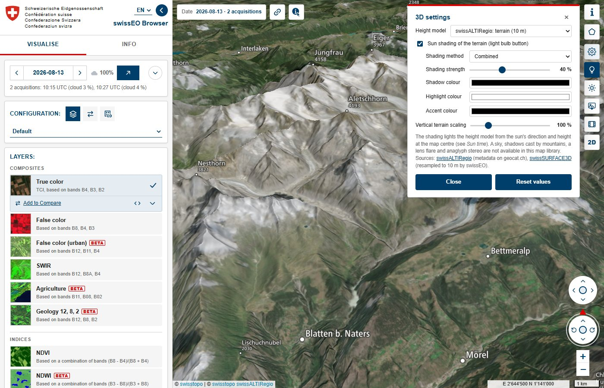
Sun shading (light bulb) and sun time (sun)
- The light bulb switches the sun shading on and off. The terrain is lit from the direction and height of the sun at the centre of the map, so the shading follows the map when you move it.
- The sun opens Sun time: the date and the time (UTC) of that sun, with sliders and fields. By default, and every time you switch to 3D, it is the time of the scene shown: when the satellite took the image, or the middle between the two passes when the date has two. It follows when you change the date or the layer. For products without a time of their own (VHI, NDVIdiff, …) it is 10:30 UTC of the date, about when Sentinel-2 passes. Move a slider for another time; Scene time goes back to the scene, Current time follows the clock. The dialog shows the local time of your computer and the position of the sun (direction and height above the horizon).
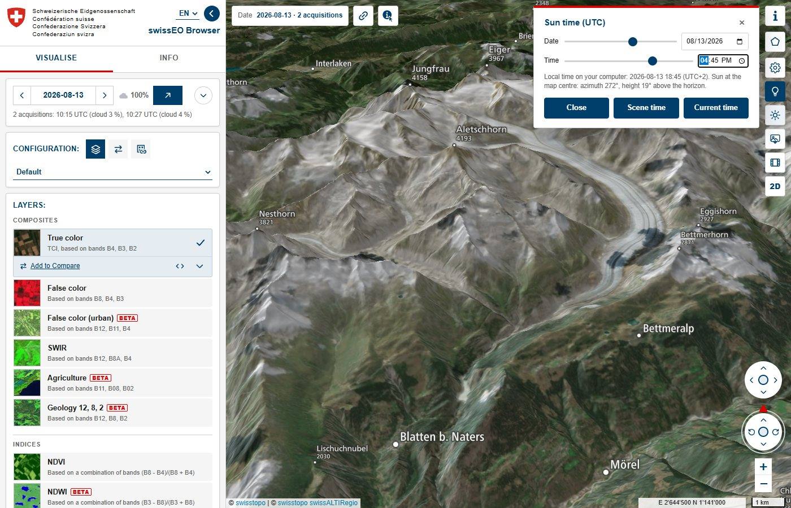
What works in 3D
- The Basic image download saves the 3D view as you see it (PNG or JPG, without scale bar, as a tilted view has no single scale).
- The split comparison needs the flat map, so in 3D the compare list uses the Opacity effect; the highlights open in 2D.
- Statistics, the analytical download, the print and the timelapse use the area around the centre of the view.
- Links keep the 3D view with its tilt and direction, the height model and the vertical scaling.
Not available, compared with the Copernicus Browser: a sky and atmosphere, shadows cast by mountains, a lens flare, anaglyph stereo and a 3D timelapse.
2Tools
The tools are the buttons at the top right of the map, below the i.
Place search
Go to Place searches places, addresses, municipalities, districts and cantons with the location search of map.geo.admin.ch. A result zooms to its extent, or to its point at a scale of about 1:25,000.
Area of interest
The pentagon button opens three options: import, rectangle and polygon. A polygon is finished with a double-click or a click on its first vertex. Drawing again adds another polygon. The vertices stay editable: drag a white dot to move a vertex, drag or click a light dot on the middle of a side to add one, and right-click a vertex to remove it. The outline cannot cross itself. The import accepts:
- files: GeoJSON, KML / KMZ, GPX, WKT and zipped Shapefiles;
- a URL to such a file (also API or WFS addresses that return GeoJSON); the server must allow access from other websites (CORS);
- a pasted geometry, an MGRS or GEOREF grid cell, or a bounding box in WGS84, LV95 or LV03 coordinates.
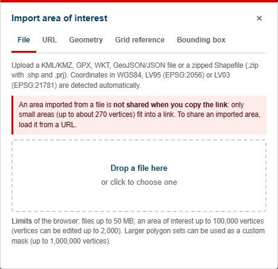
The toolbar of the area copies the geometry, shows the area, centres the map, opens the statistics and the spectral explorer, and downloads the area as GeoJSON. Small areas are part of copied links; large areas from a file are not (the toolbar then shows ⚠ not in link), while areas loaded from a URL are shared as that URL.
Statistical info and time series
For the area of interest and the current layer:
- Selected date: mean, standard deviation, median, percentiles and a histogram in the colours of the legend;
- Time series: the mean over a date range, read date by date (the least cloudy first). Clouds are judged over your area, not over the whole scene; you can also exclude clouds with the scene classification, terrain shadow, and restrict the area with any vegetation mask. The chart and the values can be downloaded as CSV.
Some layers report differently: the two-date layers (NDDI change, NDVI difference to a reference date) give the difference and, for the NDVI difference, its change report (method of the NDVI Analyst of the Canton of Aargau) with the masked area, the compared area and the affected area in hectares; the VHI season layers give the season curve.
Large areas: fast or full resolution
To stay quick, the statistics of a large area use a coarser grid read from the overviews of the data, for example 133 m for the selected date and 200 m for the time series of a 30 km wide area. A cell then mixes what lies in it, such as a meadow and the road next to it, and the masks are applied at that size. A box right below the line with the area says so, names both grids and has one choice for the whole dialog:
- Fast (coarse grid), the default;
- Full resolution (10 m): the selected date and the time series are computed at 10 m, in pieces of 1024 × 1024 cells (about 10 × 10 km). The selected date shows the pieces done; the time series shows its points as the dates are read, and Stop keeps them. A canton takes a few minutes, a time series longer; closing the dialog or changing a setting stops it. Counts, mean, standard deviation, minimum and maximum are exact, the median and percentiles to a fraction of a thousandth.
Download CSV below the statistics of the selected date saves them at the resolution used: the settings and
masks, the number of cells, the statistics and the histogram (for class layers the cells, hectares and shares per
class, for the NDVI difference the change report). The time series CSV has a column grid_m.
Spectral explorer
The mean surface reflectance of all twelve Sentinel-2 bands over the area, with ± one standard deviation, as a chart and as CSV. It shows the spectral signature of what is in your area: water, forest, crops or bare soil. The vegetation mask can be chosen here too.
Pixel inspector
Switch it on at the top of the map and click a spot. For the satellite layers it shows the band values (stored number and reflectance), the index value, the scene classification, cloud and terrain mask, the habitat map of the date (forest, vegetation), the swissTLM3D forest class, the broadleaf probability of Forest Type NFI, the broadleaf share and dominant tree species of the ETH map and the Nutzungsflächen category; for the swissEO products the product value. See Fig. 6.
Image download
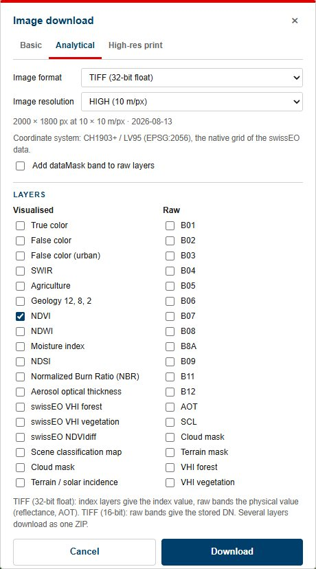
- Basic: the current view as PNG or JPG, with captions (data source, date, the vegetation mask, scale bar), an optional description, the map labels, the legend and the area of interest; also in compare mode and in 3D.
- Analytical: several layers and raw bands at once, for the view or the area of interest, at 40, 20 or 10 m or a custom resolution (up to 2500 × 2500 pixels). Formats: PNG, JPG or GeoTIFF in Swiss coordinates (LV95): 8-bit, 16-bit (the stored values) or 32-bit float with the index or physical values for your own analysis. Several files are zipped. The masks of the layer apply.
- High-res print: the view rendered for a printed size: width and height in cm (or A4 / A3, portrait or landscape), DPI and a scale. Fit keeps the whole view (or the area of interest) on the paper; a fixed scale such as 1:25 000 centres the print on the area of interest and warns when it does not fit.
Timelapse
The film button builds an animation of the current layer, with its masks, over the area of interest (or the view):
- choose the time range and Select 1 image per orbit, day, week, month or year; the month buttons skip seasons you do not want (for example winter);
- click Search: per interval the image with the best coverage of your area and the clearest sky is chosen;
- check the list: thumbnails, cloud cover and coverage of your area; the sliders filter cloudy or incomplete images;
- play the preview (speed, fade, legend, captions) and download it as GIF or video.
There are no hard limits: a weekly glacier animation over ten years works, it just takes a few minutes.
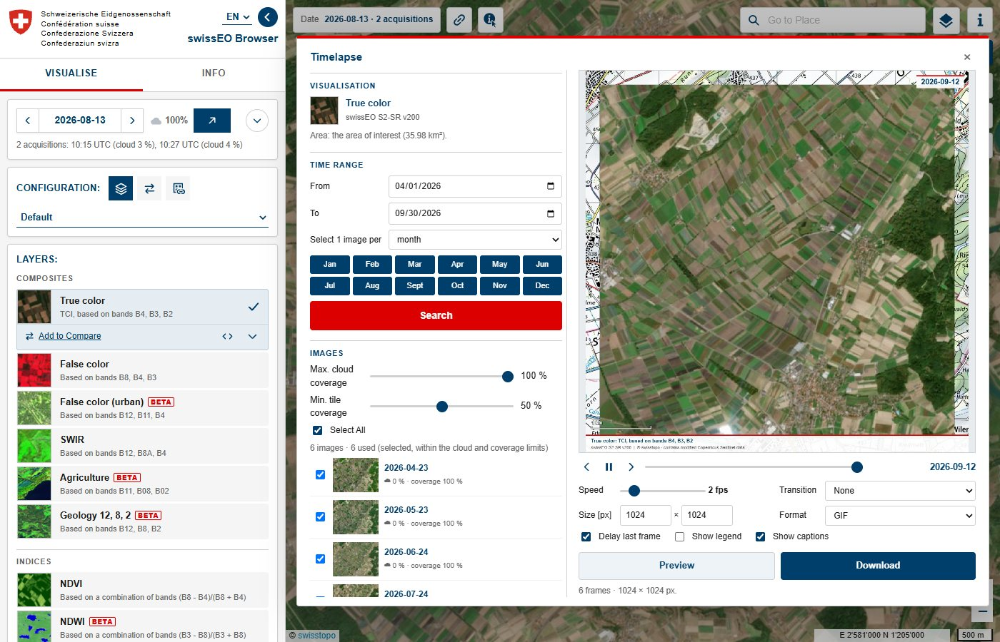
3Sharing and feedback
Links
The address bar is updated with every change: place, date, cloud filter, configuration and layer, the open layer menu, colour scale, masks (also the vegetation mask with its classes, categories, limits or tree species), effects, the compare list, the WMS / WMTS layer, the basemap and labels, the area of interest, the 3D view (tilt, direction, height model and vertical scaling) and the language. The Copy link button (chain icon) copies it. Links use Swiss coordinates (LV95) for the map centre, as map.geo.admin.ch does.
Feedback and issues
At the top of the Info tab, below the not for operational use notice:
- Feedback opens an e-mail to the swissEO team in the mail app of your computer, and a window with the addresses and the prepared text to copy, in case no mail app is set up;
- Report an issue / improvement opens a GitHub issue form of one of four kinds: Fix or change a layer, Change a text or translation, Report a general problem or Suggest an improvement. This needs a free GitHub account.
Both already contain the link to exactly the view you are looking at and a summary of what is on the map, so one or two sentences are enough. A value from the pixel inspector helps a lot when something looks wrong.
Privacy. Reporting an issue opens a prefilled issue on GitHub, a third-party service in the USA (GitHub, Inc.); everything you submit there is public, and the general problem form includes your browser version and window size. The Feedback button writes an e-mail to swisstopo instead and involves no third party beyond your own mail provider.
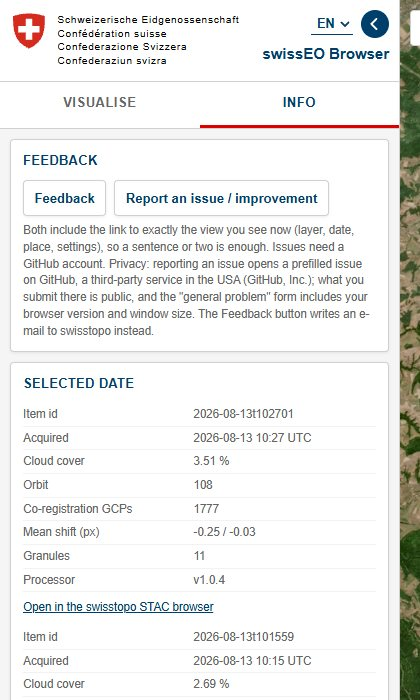
4Data, sources and limits
Data and sources
| Data | Used for | Source |
|---|---|---|
| swissEO S2-SR | Sentinel-2 surface reflectance mosaics of Switzerland at 10 m, with cloud mask, terrain mask and true color image, since 2017: all Sentinel-2 layers | swisstopo, data.geo.admin.ch |
| swissEO VHI | Daily Vegetation Health Index for forest and all vegetation, relative to 1991–2020; VHI season layers | swisstopo |
| swissEO NDVIdiff and NDVIz | NDVI change compared with the previous year, and NDVI anomaly, for the forest, at the end of July, August and September | NDVIdiff, NDVIz, swisstopo |
| swissALTIRegio | Height model of the 3D view (default), 10 m | swisstopo, metadata on geocat.ch |
| swissSURFACE3D, 10 m | Surface model of the 3D view (option), resampled to 10 m by swissEO | swisstopo |
| Habitat maps of swissEO VHI | Vegetation masks (forest, all vegetation) | swisstopo, swissEO VHI processor (topo-satromo-v2) |
| swissTLM3D forest | Vegetation mask (Wald, Wald offen, Gebüschwald), pixel inspector | swisstopo, wms.geo.admin.ch |
| Forest Type NFI 2023 | Vegetation mask (conifer, mixed, broadleaf forest), pixel inspector | WSL (Waser et al. 2025), doi:10.16904/1000001.7 |
| ETH tree species (30 m) | Vegetation mask (conifer, mixed, broadleaf forest; dominant tree species), pixel inspector | ETH Zürich (Zhou et al. 2026), arXiv:2611.08095, CC BY-NC 4.0 |
| Nutzungsflächen | Vegetation mask (13 main categories of the agricultural land use), pixel inspector | BLW and the cantons, metadata on geocat.ch |
| Basemaps, labels, place search | Background maps, names on the map, Go to Place | swisstopo, map.geo.admin.ch |
The Info tab lists the acquisitions of the selected date with their metadata and the scaling of all products.
Coordinates
All positions you see are Swiss coordinates LV95 (EPSG:2056): the mouse position, the pixel inspector, the links and the import defaults. Only GeoJSON downloads use WGS84, as the GeoJSON standard requires.
Not included compared with the Copernicus Browser
Product search and download of the original products, pins, the measuring tool, custom scripts and user accounts are not available. The 3D view has no sky and atmosphere, no shadows cast by mountains, no lens flare, no anaglyph stereo and no 3D timelapse. Other satellite missions are not included; the swissEO Browser shows the swissEO products only.
Limits
- Everything is computed in your browser: large areas, long time series and large downloads take a while, and a fast internet connection helps. A first view of a new area or date is slower than the next ones.
- The map is drawn with WebGL2, which current browsers have. On computers without a graphics card (virtual
machines, remote desktop) browsers often switch it off, and the map area says so instead of showing the map. In
Firefox, open
about:configand setwebgl.force-enabledtotrue; in Chrome or Edge, switch on Use graphics acceleration when available. Layers of other map services can only be shown when the service allows access from other websites (CORS). - The Nutzungsflächen mask is read at high resolution: for a very large view or area it asks you to zoom in.
- The ETH tree species maps have 30 m pixels (each 10 m cell takes the pixel under its centre) and are licensed CC BY-NC 4.0: non-commercial use only, with attribution. Their broadleaf share is a share of the basal area, the Forest Type NFI value a probability: the same limits do not mean the same.
- Areas of interest can have up to 100,000 vertices and files up to 50 MB; areas from files are only part of a link when they are small.
- Layers marked BETA are not yet verified; the VHI season layers count only days with a VHI value.